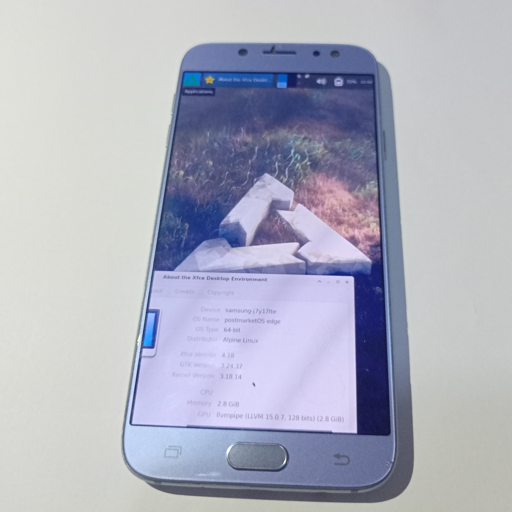

Samsung Galaxy J7 Pro (samsung-j7y17lte)
| WARNING: This port uses proprietary vendor firmware blobs (H-VENDOR.zip). If you wish to not use these, you are free to do so, at the cost of reducing the device functionality. |
| The device packages did not merge yet. If you cannot find the device in pmbootstrap init, you need to wait more. I'm so sorry for the hold up. |
|
 J7 Pro running on XFCE4 desktop environment. | |
| Manufacturer | Samsung |
|---|---|
| Name | Galaxy J7 Pro |
| Codename | samsung-j7y17lte |
| Released | 2017 |
| Category | testing |
| Original software | Android |
| Original version | 7.0 |
| Extended version | 9.0 |
| Hardware | |
| Chipset | Samsung Exynos 7870 Octa |
| CPU | Octa-core 1.6 GHz Cortex-A53 |
| GPU | Mali-T830 MP1 |
| Display | 1080 x 1920 Super AMOLED |
| Storage | 16/32/64 GB |
| Memory | 3 GB |
| Architecture | aarch64 |
| Type | handset |
{kind=link}
| USB Networking |
Works
|
|---|---|
| Flashing |
Partial
|
| Touchscreen |
Works
|
| Display |
Works
|
| WiFi |
Works
|
| FDE | |
| Mainline |
Broken
|
| Battery |
Works
|
| 3D Acceleration |
Broken
|
| Audio |
Broken
|
| Bluetooth |
Broken
|
| Camera |
Broken
|
| GPS |
Broken
|
| Mobile data |
Broken
|
| SMS | |
| Calls | |
| USB OTG |
Works
|
| NFC |
Broken
|
| Accelerometer | |
|---|---|
| Proximity | |
| Built-in DVB | |
|---|---|
| Camera Flash | |
| Haptics | |
Samsung Galaxy J7 Pro, also known as Samsung Galaxy J7 2017, is an Exynos 7870 device released by Samsung in 2017.
Contributors
- Buildingat90degreesC (Porting postmarketOS)
Users owning this device
How to enter flash mode
When the phone is powered off, hold the Power, Home and Volume Down buttons to boot into download mode. A turquoise colored screen will appear, asking for confirmation. Press Volume Up to confirm. Your device is ready for flashing via a front-end such as Odin or Heimdall.
To boot into recovery, hold the Power, Home and Volume Down buttons.
| Download mode performs some checks with the provided images before flashing it for partitions except BOOT. The images generated by pmbootstrap do not pass those checks, and thus it isn't possible to flash the rootfs using download mode. |
Installation
Prerequisites
Make sure your phone:
- Has its bootloader unlocked.
- Has a custom recovery installed (such as TWRP)
- Created the Vendor partition and flashed H-Vendor zip before
Preparation
Download the repartition script here for creating Vendor partition: https://xdaforums.com/t/tool-7870-universal-repartition-script-for-vendor-support.4143541/
Flash the zip file. It will automatically reboot to recovery.
Now in recovery again, Go to Advanced Wipe, wipe system, cache and vendor and format data. (If you can't format any of those partitions tap on the Cache partition only, for example, and go to Repair or Change File System > Change File System > EXT2 and then swipe to change and then go back to Advanced Wipe, Repair or Change File System > Change File System > and then this time EXT4 and swipe to change again. Repeat this step to any partition you haven't been able to format.)
Download the H-Vendor here: https://xdaforums.com/t/treble-10-0-arm64-h-vendor-v1-0.4116271/
This one is important. Flash the zip BEFORE flashing the postmarketOS zip file on TWRP
Choose the following in the pmbootstrap init wizard:
Vendor: samsung Device codename: j7y17lte User interface: xfce4
xfce4 is tested and works out of the box. Other UIs are not guaranteed to work.
gnome-mobile comes with wayland as its dependency. Since wayland doesn't run in downstream kernels, xorg needs to be installed.
Extra packages: xorg-server
To proceed with the installation run:
$ pmbootstrap install --android-recovery-zip
After the installation process is completed, get your phone booted into recovery, and enable sideloading via adb. Then run:
$ pmbootstrap flasher --method=adb sideload
Or you can export the zip file and install it directly via TWRP.
$ pmbootstrap export
Then nagivate to /tmp/postmarketOS/ You'll see the recovery zip there. But you need to right click it and open the real location of it because it is just a link.
Transfer the zip file to your phone.
This will begin installing pmbootstrap prepare a recovery zip file. By default, the rootfs is flashed in the SYSTEM partition of the device.
In order to change the default partition (let's say, the USERDATA partition), append --recovery-install-partition=USERDATA to the above command.
The recovery zip gets flashed to your device. Reboot to system when it's done.
| WARNING: Do not reboot to system until the TWRP is done processing script files and there's no output coming like "Setting tw_app_prompt to 0". If you do then the the recovery will not write the changes made. |
Notes on WiFi
For now the device doesn't connect to the WiFi via Network Manager. You'll need to use wpa_supplicant.
Refer to https://wiki.postmarketos.org/wiki/WiFi#Using_wpa_supplicant
Installation on an SDCard
As of my discovery in 2023-10-27, the device is confirmed to boot on an sdcard.
Apply the repartition script and flash vendor. But instead of adb or TWRP flashing, follow the instructions bellow.
Put your SDCard on a usb adapter and plug into your computer.
Enter these commands: pmbootstrap install --sdcard /dev/sdX (X is the number your sdcard is assigned as an usb flash drive.)
If your PC or laptop has an sdcard slot it might be /dev/mmcblkX instead of sdX.
Follow the prompts on screen.
Then do pmbootstrap export. nagivate to /tmp/postmarketOS-export. Find the boot.img . (Not the recovery zip.)
Flash the boot image on either Heimdall or TWRP/Orangefox.
That's it. You may now use postmarketOS as normal.